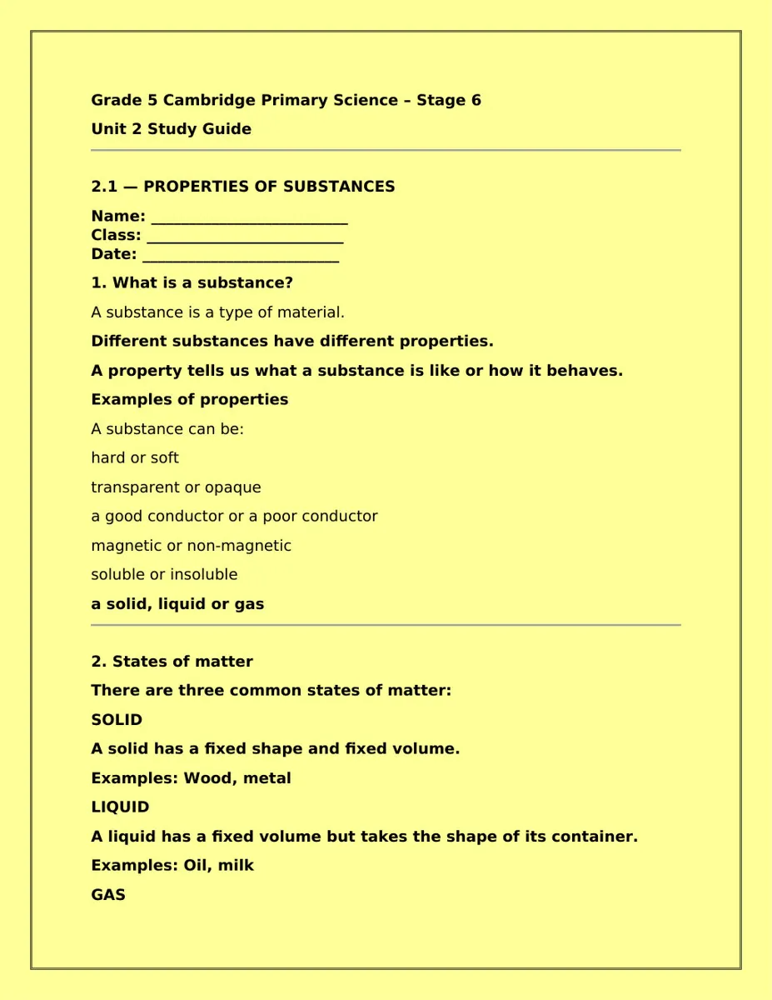
Grade 5 Cambridge Primary Science – Stage 6
Unit 2 Study Guide
2.1 — PROPERTIES OF SUBSTANCES
Name: __________________________
Class: __________________________
Date: __________________________
1. What is a substance?
A substance is a type of material.
Different substances have different properties.
A property tells us what a substance is like or how it behaves.
Examples of properties
A substance can be:
hard or soft
transparent or opaque
a good conductor or a poor conductor
magnetic or non-magnetic
soluble or insoluble
a solid, liquid or gas
2. States of matter
There are three common states of matter:
SOLID
A solid has a fixed shape and fixed volume.
Examples: Wood, metal
LIQUID
A liquid has a fixed volume but takes the shape of its container.
Examples: Oil, milk
GAS
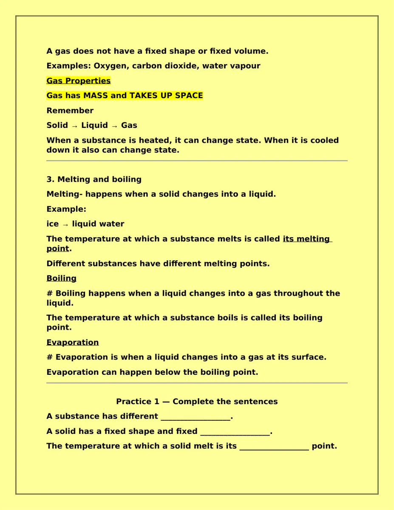
A gas does not have a fixed shape or fixed volume.
Examples: Oxygen, carbon dioxide, water vapour
Gas Properties
Gas has MASS and TAKES UP SPACE
Remember
Solid → Liquid → Gas
When a substance is heated, it can change state. When it is cooled
down it also can change state.
3. Melting and boiling
Melting- happens when a solid changes into a liquid.
Example:
ice → liquid water
The temperature at which a substance melts is called its melting
point.
Different substances have different melting points.
Boiling
# Boiling happens when a liquid changes into a gas throughout the
liquid.
The temperature at which a substance boils is called its boiling
point.
Evaporation
# Evaporation is when a liquid changes into a gas at its surface.
Evaporation can happen below the boiling point.
Practice 1 — Complete the sentences
A substance has different __________________.
A solid has a fixed shape and fixed __________________.
The temperature at which a solid melt is its __________________ point.
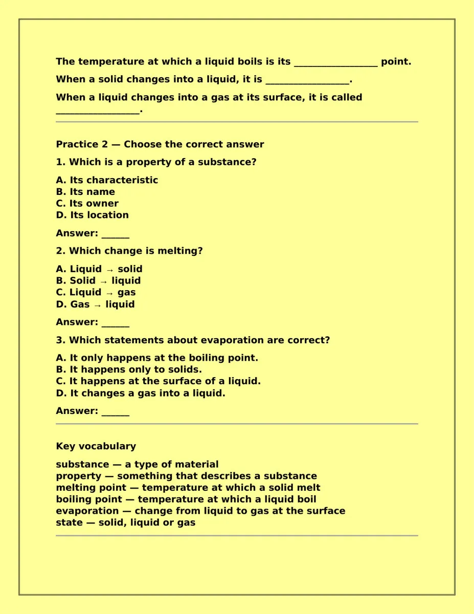
The temperature at which a liquid boils is its __________________ point.
When a solid changes into a liquid, it is __________________.
When a liquid changes into a gas at its surface, it is called
__________________.
Practice 2 — Choose the correct answer
1. Which is a property of a substance?
A. Its characteristic
B. Its name
C. Its owner
D. Its location
Answer: ______
2. Which change is melting?
A. Liquid → solid
B. Solid → liquid
C. Liquid → gas
D. Gas → liquid
Answer: ______
3. Which statements about evaporation are correct?
A. It only happens at the boiling point.
B. It happens only to solids.
C. It happens at the surface of a liquid.
D. It changes a gas into a liquid.
Answer: ______
Key vocabulary
substance — a type of material
property — something that describes a substance
melting point — temperature at which a solid melt
boiling point — temperature at which a liquid boil
evaporation — change from liquid to gas at the surface
state — solid, liquid or gas
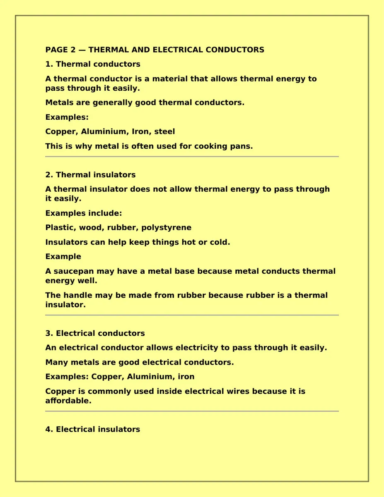
PAGE 2 — THERMAL AND ELECTRICAL CONDUCTORS
1. Thermal conductors
A thermal conductor is a material that allows thermal energy to
pass through it easily.
Metals are generally good thermal conductors.
Examples:
Copper, Aluminium, Iron, steel
This is why metal is often used for cooking pans.
2. Thermal insulators
A thermal insulator does not allow thermal energy to pass through
it easily.
Examples include:
Plastic, wood, rubber, polystyrene
Insulators can help keep things hot or cold.
Example
A saucepan may have a metal base because metal conducts thermal
energy well.
The handle may be made from rubber because rubber is a thermal
insulator.
3. Electrical conductors
An electrical conductor allows electricity to pass through it easily.
Many metals are good electrical conductors.
Examples: Copper, Aluminium, iron
Copper is commonly used inside electrical wires because it is
affordable.
4. Electrical insulators
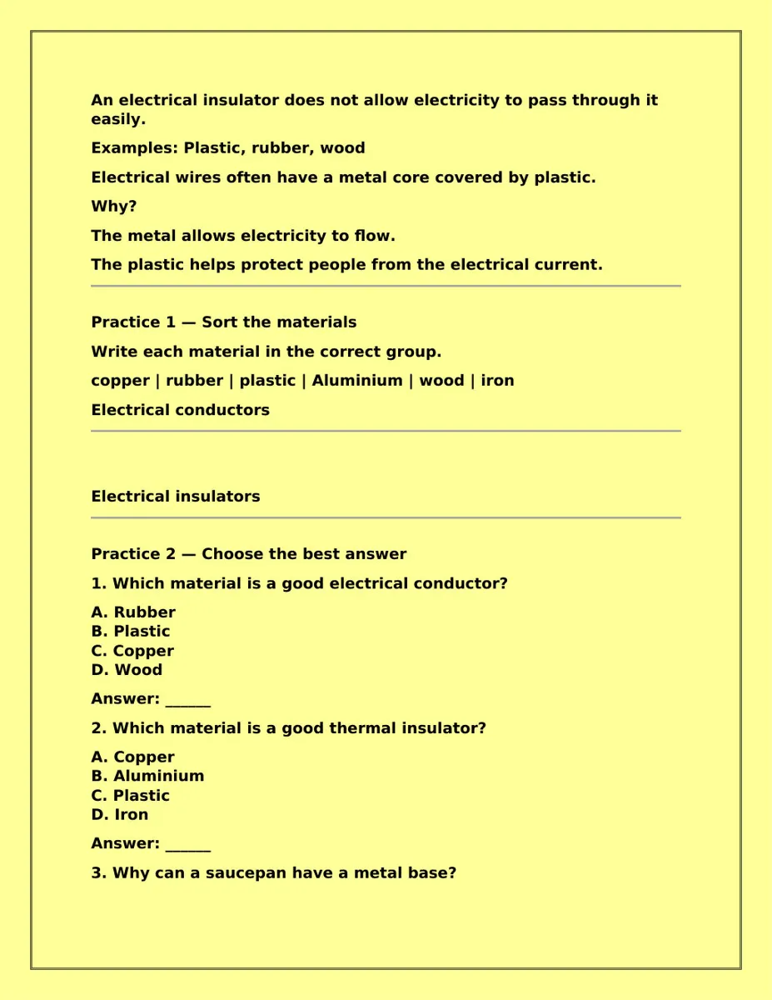
An electrical insulator does not allow electricity to pass through it
easily.
Examples: Plastic, rubber, wood
Electrical wires often have a metal core covered by plastic.
Why?
The metal allows electricity to flow.
The plastic helps protect people from the electrical current.
Practice 1 — Sort the materials
Write each material in the correct group.
copper | rubber | plastic | Aluminium | wood | iron
Electrical conductors
Electrical insulators
Practice 2 — Choose the best answer
1. Which material is a good electrical conductor?
A. Rubber
B. Plastic
C. Copper
D. Wood
Answer: ______
2. Which material is a good thermal insulator?
A. Copper
B. Aluminium
C. Plastic
D. Iron
Answer: ______
3. Why can a saucepan have a metal base?
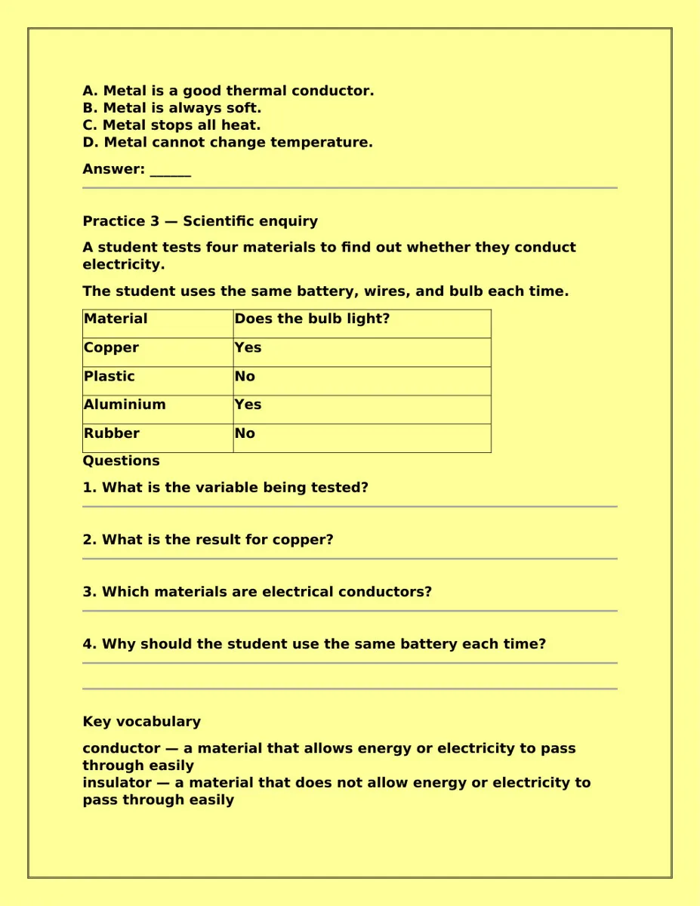
A. Metal is a good thermal conductor.
B. Metal is always soft.
C. Metal stops all heat.
D. Metal cannot change temperature.
Answer: ______
Practice 3 — Scientific enquiry
A student tests four materials to find out whether they conduct
electricity.
The student uses the same battery, wires, and bulb each time.
Material
Does the bulb light?
Copper
Yes
Plastic
No
Aluminium
Yes
Rubber
No
Questions
1. What is the variable being tested?
2. What is the result for copper?
3. Which materials are electrical conductors?
4. Why should the student use the same battery each time?
Key vocabulary
conductor — a material that allows energy or electricity to pass
through easily
insulator — a material that does not allow energy or electricity to
pass through easily
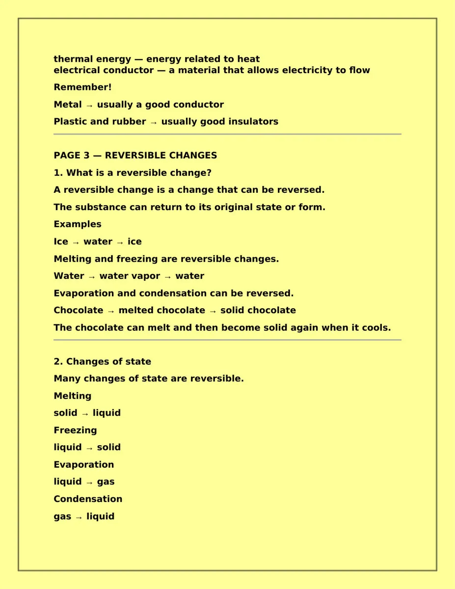
thermal energy — energy related to heat
electrical conductor — a material that allows electricity to flow
Remember!
Metal → usually a good conductor
Plastic and rubber → usually good insulators
PAGE 3 — REVERSIBLE CHANGES
1. What is a reversible change?
A reversible change is a change that can be reversed.
The substance can return to its original state or form.
Examples
Ice → water → ice
Melting and freezing are reversible changes.
Water → water vapor → water
Evaporation and condensation can be reversed.
Chocolate → melted chocolate → solid chocolate
The chocolate can melt and then become solid again when it cools.
2. Changes of state
Many changes of state are reversible.
Melting
solid → liquid
Freezing
liquid → solid
Evaporation
liquid → gas
Condensation
gas → liquid
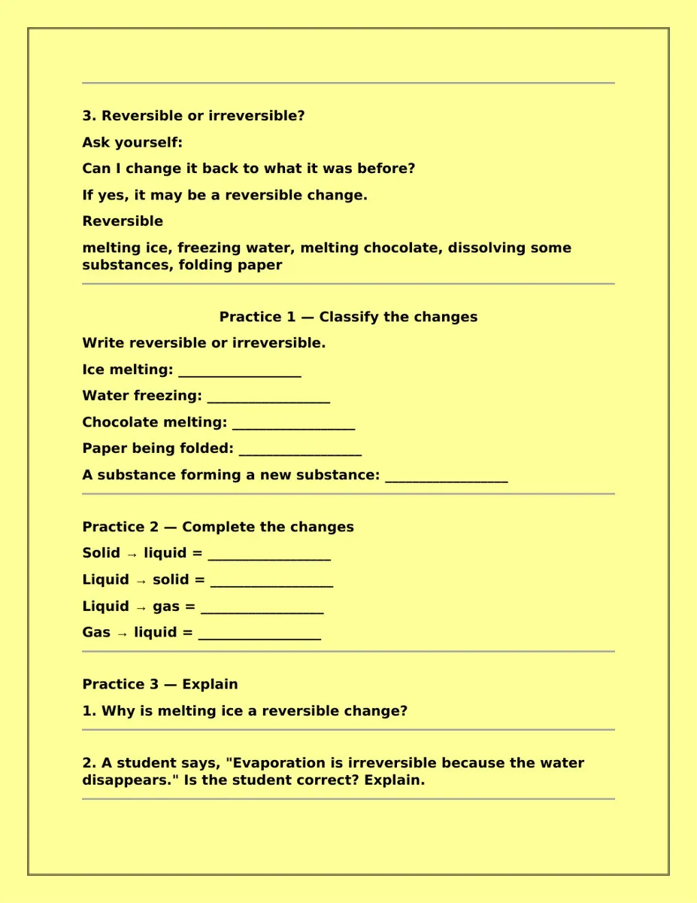
3. Reversible or irreversible?
Ask yourself:
Can I change it back to what it was before?
If yes, it may be a reversible change.
Reversible
melting ice, freezing water, melting chocolate, dissolving some
substances, folding paper
Practice 1 — Classify the changes
Write reversible or irreversible.
Ice melting: __________________
Water freezing: __________________
Chocolate melting: __________________
Paper being folded: __________________
A substance forming a new substance: __________________
Practice 2 — Complete the changes
Solid → liquid = __________________
Liquid → solid = __________________
Liquid → gas = __________________
Gas → liquid = __________________
Practice 3 — Explain
1. Why is melting ice a reversible change?
2. A student says, "Evaporation is irreversible because the water
disappears." Is the student correct? Explain.
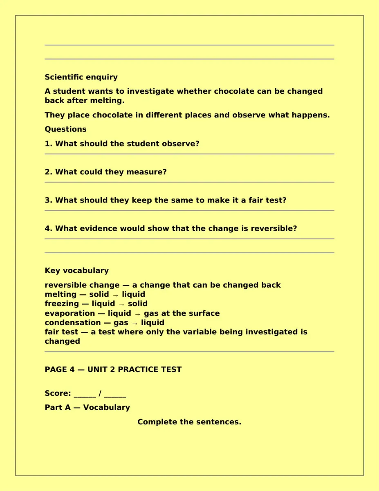
Scientific enquiry
A student wants to investigate whether chocolate can be changed
back after melting.
They place chocolate in different places and observe what happens.
Questions
1. What should the student observe?
2. What could they measure?
3. What should they keep the same to make it a fair test?
4. What evidence would show that the change is reversible?
Key vocabulary
reversible change — a change that can be changed back
melting — solid → liquid
freezing — liquid → solid
evaporation — liquid → gas at the surface
condensation — gas → liquid
fair test — a test where only the variable being investigated is
changed
PAGE 4 — UNIT 2 PRACTICE TEST
Score: ______ / ______
Part A — Vocabulary
Complete the sentences.
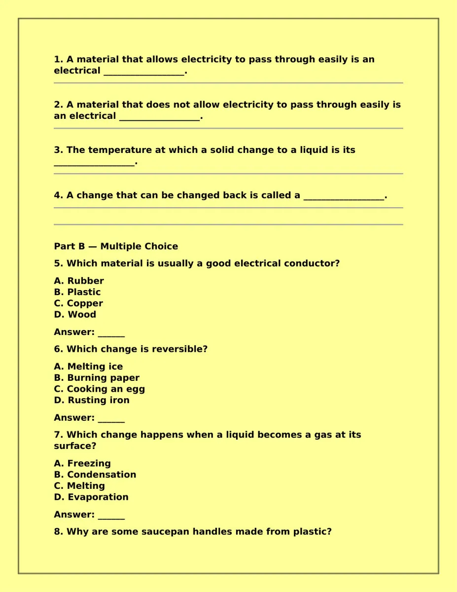
1. A material that allows electricity to pass through easily is an
electrical __________________.
2. A material that does not allow electricity to pass through easily is
an electrical __________________.
3. The temperature at which a solid change to a liquid is its
__________________.
4. A change that can be changed back is called a __________________.
Part B — Multiple Choice
5. Which material is usually a good electrical conductor?
A. Rubber
B. Plastic
C. Copper
D. Wood
Answer: ______
6. Which change is reversible?
A. Melting ice
B. Burning paper
C. Cooking an egg
D. Rusting iron
Answer: ______
7. Which change happens when a liquid becomes a gas at its
surface?
A. Freezing
B. Condensation
C. Melting
D. Evaporation
Answer: ______
8. Why are some saucepan handles made from plastic?
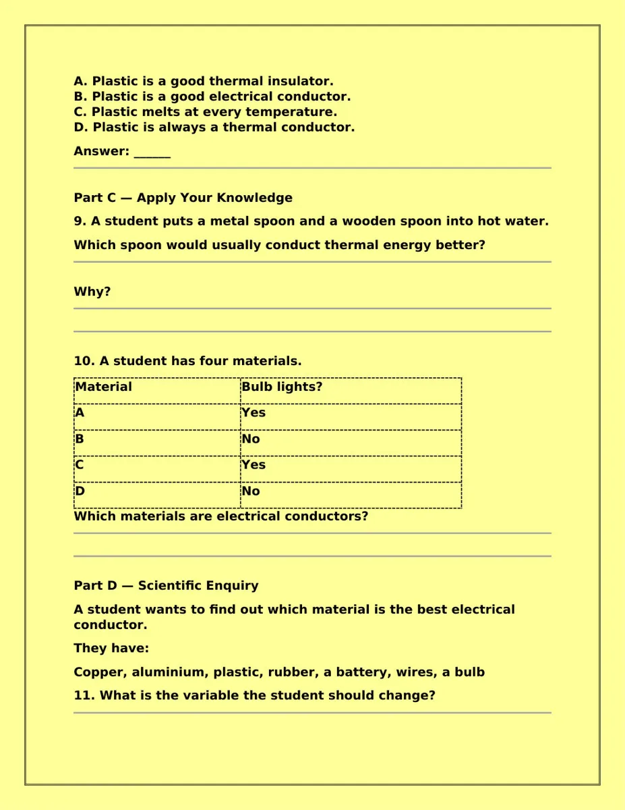
A. Plastic is a good thermal insulator.
B. Plastic is a good electrical conductor.
C. Plastic melts at every temperature.
D. Plastic is always a thermal conductor.
Answer: ______
Part C — Apply Your Knowledge
9. A student puts a metal spoon and a wooden spoon into hot water.
Which spoon would usually conduct thermal energy better?
Why?
10. A student has four materials.
Material
Bulb lights?
A
Yes
B
No
C
Yes
D
No
Which materials are electrical conductors?
Part D — Scientific Enquiry
A student wants to find out which material is the best electrical
conductor.
They have:
Copper, aluminium, plastic, rubber, a battery, wires, a bulb
11. What is the variable the student should change?
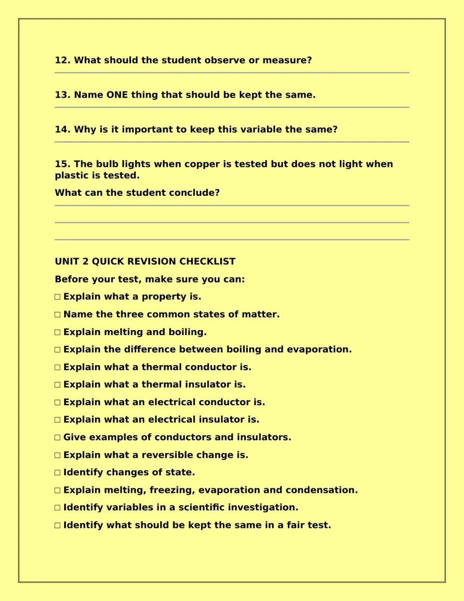
12. What should the student observe or measure?
13. Name ONE thing that should be kept the same.
14. Why is it important to keep this variable the same?
15. The bulb lights when copper is tested but does not light when
plastic is tested.
What can the student conclude?
UNIT 2 QUICK REVISION CHECKLIST
Before your test, make sure you can:
□ Explain what a property is.
□ Name the three common states of matter.
□ Explain melting and boiling.
□ Explain the difference between boiling and evaporation.
□ Explain what a thermal conductor is.
□ Explain what a thermal insulator is.
□ Explain what an electrical conductor is.
□ Explain what an electrical insulator is.
□ Give examples of conductors and insulators.
□ Explain what a reversible change is.
□ Identify changes of state.
□ Explain melting, freezing, evaporation and condensation.
□ Identify variables in a scientific investigation.
□ Identify what should be kept the same in a fair test.
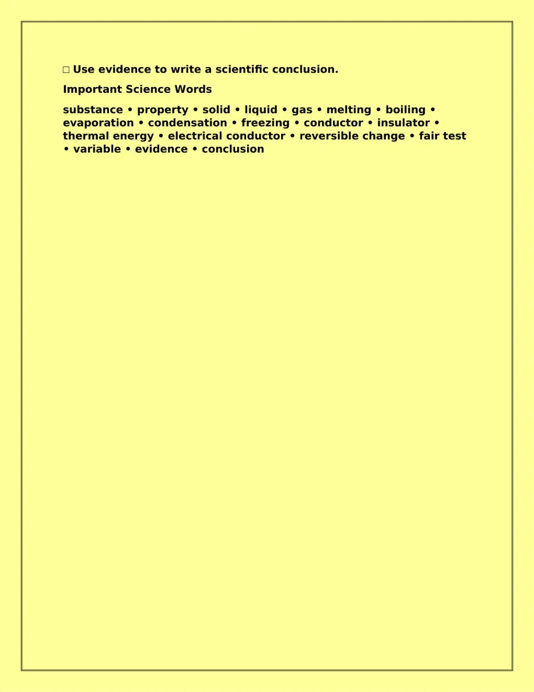
□ Use evidence to write a scientific conclusion.
Important Science Words
substance • property • solid • liquid • gas • melting • boiling •
evaporation • condensation • freezing • conductor • insulator •
thermal energy • electrical conductor • reversible change • fair test
• variable • evidence • conclusion